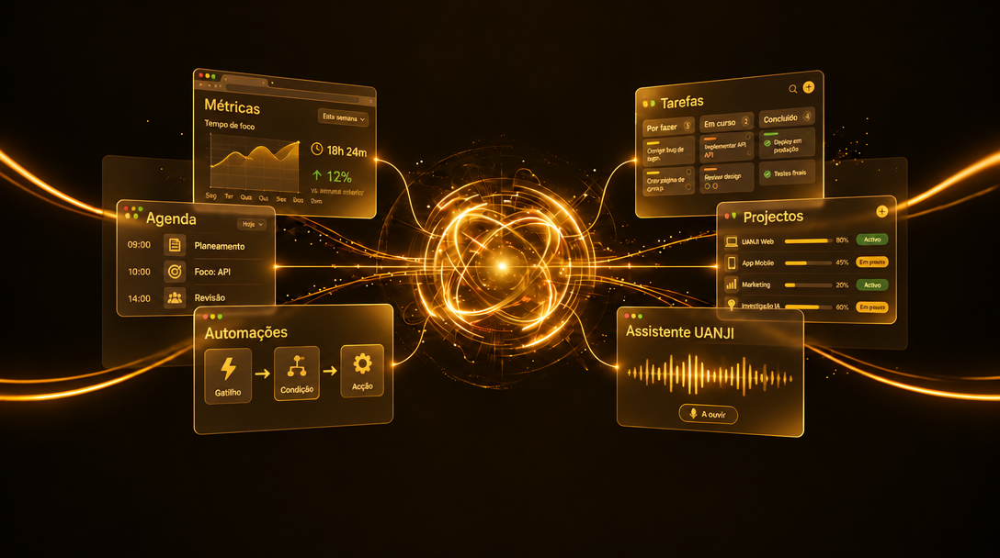

Tempo de foco · esta semana
SegTerQuaQuiSexSábDom
Foco total
18h 24m
↑ 12% vs semana anterior
Tarefas concluídas
23
Por projecto
UANJI Web · 7h
App Mobile · 5h 40m
Investigação IA · 3h
Hoje · quinta, 29
09:00Planeamento · 30 min
10:00Foco: API · bloco de 2 h
14:00Revisão · equipa
17:30Revisão diária
Semana
Seg
Ter
Qua
Qui
Sex
⚡
GatilhoPR aprovado no GitHub
⑂
Condiçãotítulo tem #tarefa
⚙
Acçãoconcluir tarefa
◎
Resultadook · há 12 min
Manual
botão, ⌘K ou voz
Agendado
todos os dias às 08:00
Evento externo
GitHub, webhook, calendário
Por fazer · 3
Corrigir bug de login
alta · hoje
Criar página de equipa
média
Documentar endpoints
baixa
Em curso · 2
Implementar API
UANJI Web · 60%
Rever design
App Mobile
Concluído · 4
✓ Deploy em produção
✓ Testes finais
UANJI Web
80%Activo
App Mobile
45%Em pausa
Marketing
20%Activo
Investigação IA
60%Em pausa
Cada projecto abre o seu espaço: tarefas, documentos, fluxos, código e métricas.
🎙 A ouvir
UAJI, quais são as minhas prioridades de hoje?
Tem 3 tarefas para hoje. A prioridade é «Corrigir bug de login», com prazo às 18:00. Quer que inicie uma sessão de foco?
SimAgora não
Q360 · Linha Saúde
11 tarefas · 8 documentos · 3 fluxos · 2 repositórios
EYK
4 tarefas · 5 documentos · 1 fluxo
Gestão Escolar
em pausa · 6 tarefas
LGA Vision
1 bloqueio · dataset por validar
Ao entrar num espaço, os seis painéis passam a mostrar só esse projecto.
Ciclo médio
2,4 dias
início → conclusão
Bloqueadas
3
há 4 dias em média
Interrupções
7 / dia
mudanças de contexto
Semana
+18%
concluídas
Progresso por objectivo
API pública v1
62%
Lançar app mobile
45%
Piloto no hospital
10%
Commits · uanji-web
a3f9c21 feat: paginação por cursor → tarefa #41
7be0d44 fix: validação do login → #38
19c2e07 docs: endpoints da API
Pull requests
#12 auth JWT · aprovado
#13 página de equipa · em revisão
Issues e branches
#19 erro 500 no login · aberta
feature/pagination · main · release/v0.4
Versão v0.4
6 de 7 tarefas ligadas concluídas
🔍 pag|
Tarefas
Definir paginação e filtros⏎
+ Criar tarefa «pag…»
Ficheiros
src/api/pagination.py
Fluxos e comandos
▶ Executar fluxo «Relatório de páginas lentas»
⌘ Abrir projecto UANJI Web
↑↓ navegar · ⏎ abrir · ⌘⏎ executar
Notas recentes
💡 Usar cache na API · ideia
⚖ Escolha do JWT · decisão
🐞 Erro CUDA no treino · solução
📄 Arquitectura v2 · documentação
Ligações
Agora
Visual Studio Code
pasta uanji-web · há 42 min
Hoje
5 h 12 min
activo desde as 08:47
Hábito
09:00–11:00
as suas horas mais intensas
Por aplicação
VS Code
2 h 40
Chrome
1 h 10
WhatsApp
25 min
Só local · sem teclas, conteúdo ou capturas · pode desligar a qualquer momento
Voz e personalidade
Voz: Joana (feminina, pt-PT)
Palavra de activação: «UAJI»
Tratamento: neutro
Iniciativa do assistente
Frequência: normal (20 min)
Falar em voz alta: sim
Silêncio: 22:00 – 07:00
Aparência
Tema: Âmbar dourado
Disposição: adaptativa
Sistema e privacidade
Abrir aplicações: sim
Comandos de terminal: desligados
Monitor de actividade: ligado